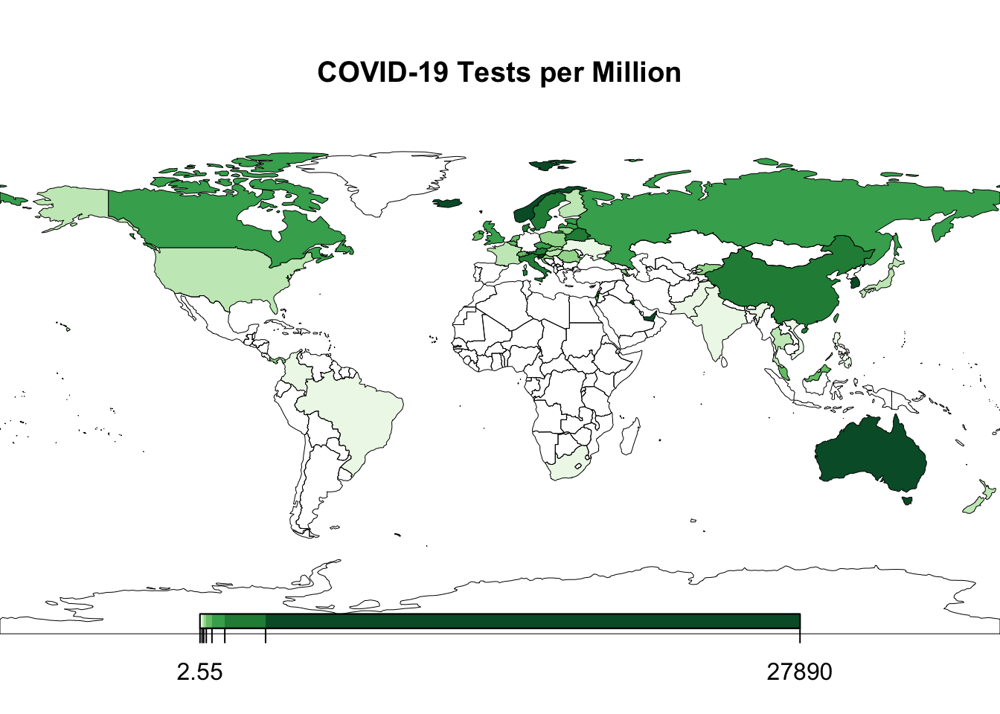
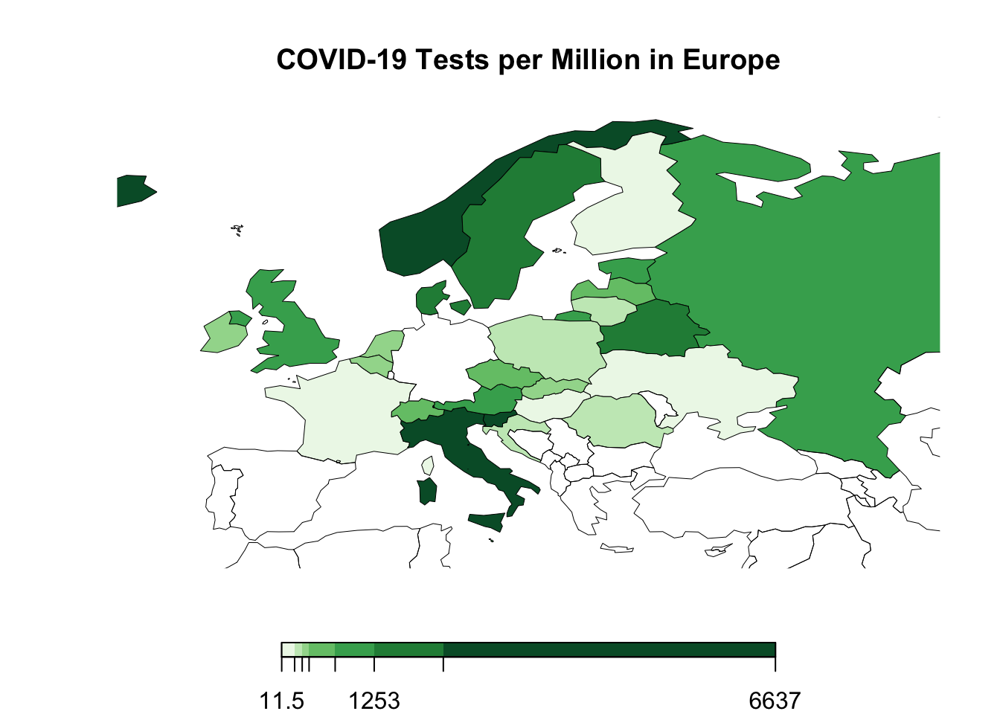
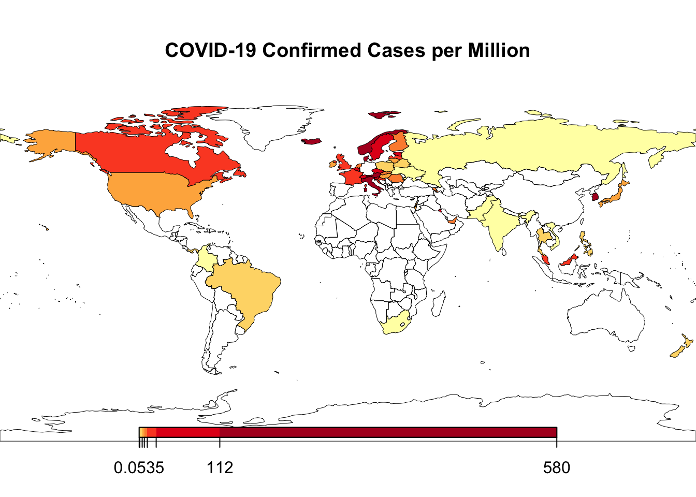
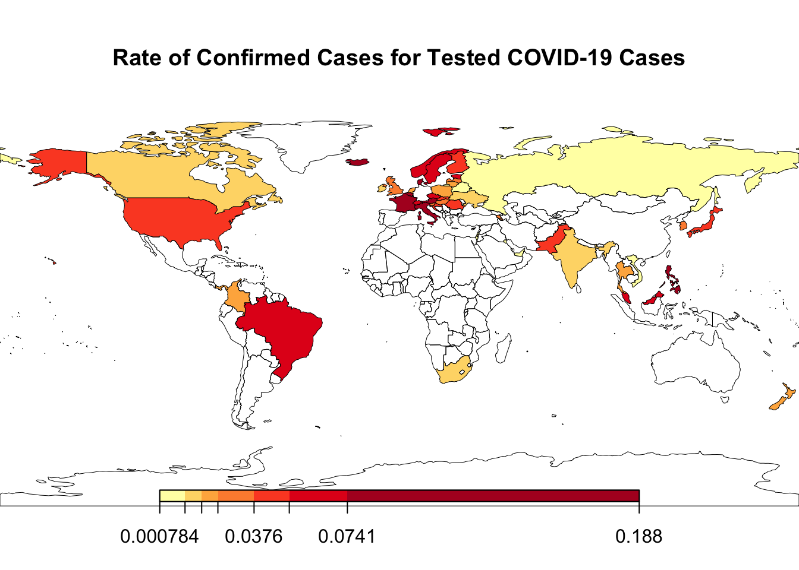
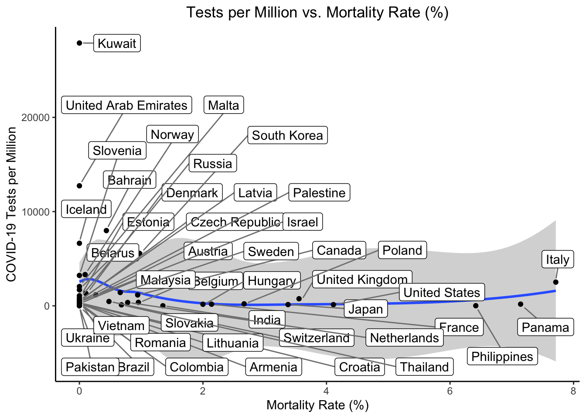
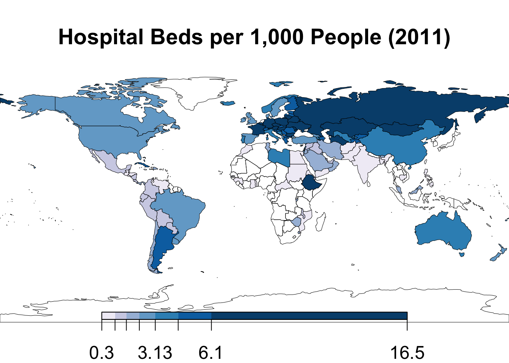
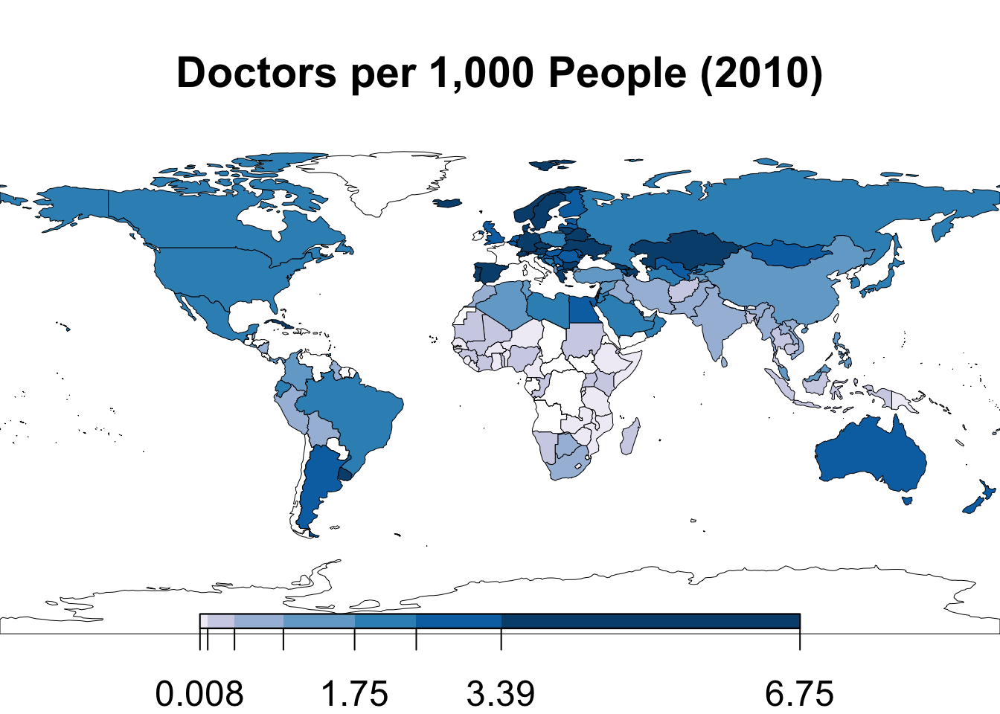

Recently, I read Andreas Backhaus’s great post about the age distribution of COVID-19 cases across South Korea and Italy. In short, South Korea shows a higher proportion of young people with the virus, with 30% of the nation’s cases between the ages of 20 and 29. Italy, meanwhile, has a distribution of cases much more heavily skewed toward the elderly, which does not mirror the broader population. This difference can help explain why South Korea has a vastly different mortality rate than Italy – just under 1% compared to Italy’s 8.3% based on the latest data. But why is there a vastly diffferent age distribution across COVID-19 cases between the two countries?
One clear reason is the difference in testing between the two countries. South Korea has tested more capita – 5,567 tests per million – compared to Italy’s 2,514 tests per million. This shows that South Korea has carried out 2.1 times as many tests relative to its population as Italy. Since South Korea has tested more widely and shows a broader distribution of cases across age groups, this suggests that Italy’s outbreak actually includes many more young people who are not currently represented in the official data. This could explain why Italy’s mortality rate appears high compared to other countries’, as the denominator of official cases likely does not include a large number of young people who show mild symptoms.
Although not all countries publish data on the number of COVID-19 cases they test, Our World in Data provides data for the ones that do.The data shows a great deal of variation across countries, ranging from 2.55 tests per million in Pakistan to 27,888 tests per million in Kuwait. The United States has tested relatively few cases so far, with 64 tests for every million citizens. The map below shows the number of COVID-19 tests per million for available countries.

In Europe, which currently has the highest number of COVID-19 cases globally, Iceland, Norway, and Sweden have conducted the most per capita tests at over 3,000 tests per million, while Ukraine, Finland, Hungary, and France have all conducted fewer than 170 tests per million.

Confirmed cases, meanwhile, are highly concentrated in Europe. Iceland and Italy top the chart with 6,637 and 2,514 cases per million respectively. What does the relationship between tested and confirmed cases across countries tell us?

One way to consider this relationship is look at what percentage of tested cases are confirmed as positive cases. Italy had the highest percentage of confirmed cases from those tested (18.8%), followed by the Philippines (18.1%), France (12.7%), Denmark (12.6%), and Austria (11.0%). The United States ranked 20 out of the 48 countries, with 4.0% of all tested cases confirmed COVID-19 cases. South Korea, which has been widely praised for its response to the crisis, had 2.9% of all tested cases confirmed as active cases.

Interpreting this rate, however, is tricky. A country could have a high rate of confirmed cases if it is not testing widely, which would indicate many more undiagnosed cases for each confirmed case. On the other hand, countries may test all individuals in contact with sick people, in which case a high rate would signal a high level of effectiveness (i.e., countries find and test sick people). Without knowing each country’s testing strategy, it is difficult to understand what this rate means for how countries are testing for COVID-19.
Since many COVID-19 patients show mild or moderate symptoms, the more widely a country tests, the lower the mortality rate will appear. It is also important to note that it takes a while for COVID-19 to kill patients, so countries that are early in the pandemic will typically have artificially low mortality rate since they will have many diagnosed cases but few deaths… yet. Thus, this data does not tell the whole story as it compares countries at different stages, while a fair comparison would compare mortality and testing rates after the pandemic has run its course.
These qualifications aside, we can see that most countries are not testing much (relative to their population), while a few countries are testing a lot. The data also shows the expected relationship – countries that test more appear to have lower mortality rates, like South Korea. Again, this is likely a statistical issue more than anything. Although some individuals have suffered adverse health outcomes because they were not diagnosed early, this trend at the national level more likely indicates that countries with lower levels of testing appear to have higher mortality rates because people with milder symptoms are not included in the official statistics.

Finally, the quality of a nation’s healthcare system also plays an important role in determining both mortality rates and testing. Although most cases today are in developed countries with advanced healthcare systems, there is still important variation across the countries. Below are the number of doctors and hospital beds per 1,000 people from World Bank data (for 2010 and 2011 respectively.)


Countries also differ in median age, which affects mortality rates, and may differ in other important ways not captured here. However, the wide variation in testing suggests that there can be significant differences in the types of COVID-19 across countries despite their reported number of cases. These testing differences help explain diverging COVID-19 mortality rates across countries.